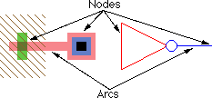

В большинстве САПР используется два способа проектирования интегральных микросхем: обеспечение связанности
и геометрический.
- Метод обеспечения связанности используется каждой схематической(Schematic) системой проектирования: вы расставляете компоненты и рисуете соеденительные провода.
Компоненты остаются соедененными, даже если их переместить.
- Геометрический метод используется в большинстве топологических системах проектирования интегральных микросхем (ИС): "закрашенные" прямоугольники распологаются на разных слоях для формирования масок для изготовления микросхемы.
Electric другой
, потому что он использует связанность для всего проекта, включая топологию ИС. Это означает что вы распологаете компоненты (МДП транзисторы, котнакты и т.д.) и рисуете провода (металл1-2, поликристаллический кремний и т.д.) для их соеденения. Экран показывает реальную геометрическую форму, но это означает и связанность тоже.
Проектирование топологии ИС с обеспечением связанности дает много преимуществ:
- Никакой экстракции узла (No node extraction).
Экстракция узла - это не отдельный, подверженный ошибкам шаг. Вместо этого, обеспечение связанности - это легко доступная часть описания топологической схемы. Обеспечение связанности ускоряет все схемотехнические операции, включая моделирование, проверки layout-versus-schematic (LVS) и правильности принципиальной электрической схемы проекта (electrical rules checkers).
- Никаких геометрических ошибок.
Сложные компоненты больше не составлены из несвязанных геометрических частей, которые могут перемещаться независимо друг от друга. В системах прорисовки (paint systems), вы можете случайно отодвинуть область затвора от транзистора, таким образом удаляя транзистор. В Electric транзистор - это единый объект, которые не может случайно разрушиться.
- Более эффективное редактирование.
Просмотр эл. схемы более эффективен, потому что редактор может показать полную эл. цепь всякий раз, когда ее часть выбрана(выделена). Также, Electric совмещает обеспечение связанности с системой ограничения топологии (layout constraint system), давая редактору мощные инструменты управления. Эти инструменты сохраняют проект связанным, даже если схема модифицируется на разных уровнях иерархии.
- Инструменты интеллектуальней,
когда они могуть использовать данные о связанности. Например, Программа контроля правил проектирования (Design Rule checker) знает, когда топология связанна и использует различные правила размещения.
- Более простой процесс проектировки.
При одновременном создании эл. схемы и топологии, получение корректной LVS-проверки включает в себя много шагов design rule cleaning(checking???). Так происходит потому что экстракция узла должна быть закончена для обеспечения связанности топологии ИС, и экстракторы узлов не работают когда правила проектировки нарушены. Так, каждый раз когда проверка LVS находит проблемы, топология должна быть исправлена и DRC опять очищается. С этого момента Electric может выбирать (extract) сзвязанность для LVS без идеального соблюдения правил проекта, первый шаг - это приведение в соответствие топологии и эл. схемы. Далее правила проектирования могут быть очищены без страха потери LVS соответствия.
- Обычный пользовательский интерфейс.
дна САПР-система, с единым пользовательским интерфейсом, может быть использована для создания как топологии, так и эл. схемы. Electric тесно(плотно) интегрирует процесс рисования, отделяя схематику, и имеет LVS инструмент для их сравнения.
Недостатки топологического проектирования, основанного на связанности также известны:
-
Оно отличается
от всех остальных и требует переподготовки. Это действительно так, но многие переучились и нашли его стоящим. Пользователи, которым хорошо знакома геометрическая компоновка топологии ИС обычно обучаются дольше и тяжелее. Electric подходит для тех кто не имеет опыта проектирования ИС.
-
Требует дополнительных действий
со стороны пользователя для внесения связанности. В то время как это может быть правдой на начальных стадиях проектирования, в общем это не так. Так получается потому что используя связанность на начальных стадиях проектирования вы помогаете системе находить проблемы в будущем. Кроме того, Electric имеет мощный инструментарий для автоматического управления связанностью.
-
Проектирование происходит не в РЕЖИМЕ ТОЧНОГО ОТОБРАЖЕНИЯ
(WYSIWYG - what-you-see-is-what-you-get) потому что объекты которые соприкачаются на дисплее могут быть или не быть реально соединенными. Electric оснащен инструментами, гарантирующими то, что связанность создана должным образом.
|
Electric обрабатывает все типы проектирования схемы путем отображения на экране совокупности узлов и дуг, соединненых в цепь. Узлы - электрические компоненты, такие как транзисторы, контакты и логические вентили. Дуги - это просто провода которые соединяют два компонента. Порты (Ports) точки на узлах, к которым подключаются дуги.
|

|
В вышеупомянутом примере, узел транзистора имеет три геометрические области на различных слоях: поликремний, активная область, и подложка. Этот узел может быть масштабирован, повернут и изменен иным способом не касаясь размера конкретного слоя. Так происходит потому что правила для рисования узла запрограммированы в технологии
,
которая описывает узлы и дуги в терминах конкретных слоев.
Так как Electric использует использует узлы и дуги для проектирования, то важно то что они используются для создания всех соответствующих соединений. Несмотря на то что топология кажется соединенной когда два компонента соприкасаются, провод должен быть использован чтобы указать связь для Electric. Это требует немного больше усилий при проектировании схемы, но это усилие оплачивается сполна многими способами когда Electric понимает вашу схему.
Помимо создания многозначительных (значимых) электрических цепей, дуги, которые формируют провода в Electric, могут также удерживать связи (constraints). Связь помогает контролировать изменения геометриии - например, жесткая
связь скрепляет два компонента в фиксированную конструкцию в то время как остальная часть схемы растягивается. Такие связи распространяются в схеме, даже против иерархических уровней проекта, так, чтобы очень сложные схемы могли разумно управляться.
Ячейка - это совокупность узлов и дуг, формирующих описание схемы. Бывают различные виды(представления) ячейки, такие как схематический, топология, пиктограммы, и т.д. Также, каждый вид ячейки может различаться версиями, формированием истории проекта. Кратные(Multiple) виды и версии ячейки организуются в группу ячеек (Cell groups).
Например, ячейка тактового генератора(clock) может состоять из схематического и топологического вида. Схематический вид бывает двух версий: 1(более старая) и 2(более новая). В этом случае группа ячеек тактового генератора содержит три ячейк: топологический вид (называется "clock{lay}"), текущее схематическое представление (называется "clock{sch}") и старое схематическое представление (называется "clock;1{sch}").
Иерархия реализовывается при размещении одной ячейки в другую. Когда это происходит, размещенная ячейка распологается ниже в иерархии, и ячейка в которой размещают - выше. Поэтому, понятие движения вниз tпо иерархии подразумевает перемещение в экземпляр ячейки, и понятие восхождения по иерархии означает переход туда где размещена ячейка. Обратите внимание, что экземпляры ячейки - это фактически узлы, точно такие же как элементарные транзисторы и вентили. Определяя экспорты (exports) внутри ячейки, вы делаете их местами соединения, или портами, в экземплярах этой ячейки.
Совокупность ячеек формирует библиотеку, и она обрабатывается на диске как отдельный файл. Поскольку полная библиотека обрабатывается как отдельный файл, она может содержать завершенную иерархию ячеек. Любая ячейка в библиотеке может содержать образцы других ячеек. Завершенная схема может быть сохранена в отдельной библиотеке, или может быть разбита на множество библиотек.